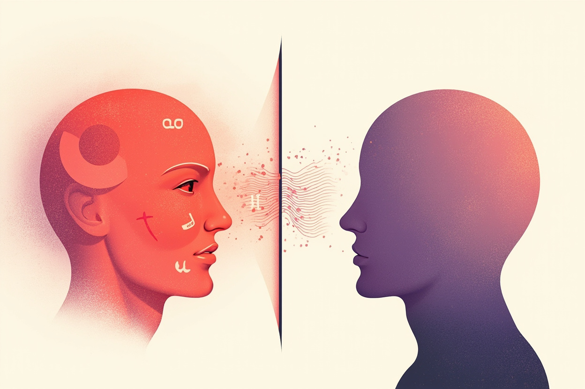

被没收的三条信道：副语言、表情与即时反馈
面对面对话里，同一句"行，就按你说的办"，可以配合点头和轻松的语调说（真同意），也可以配合翻白眼和拖长的音调说（强烈不满）。承载这些信息的不是词汇，而是副语言（音调、音量、语速、停顿）、面部表情与肢体动作，以及即时的双向反馈——你看到对方皱眉，会当场把话找补回来。心理学把语言之外的这些信息统称非言语沟通（nonverbal communication），它在情绪信息的传递中占大头，这也是为什么"文字看不出语气"不是一句抱怨，而是一个传播学事实。
切换到文字聊天，三条信道同时被切断：没有音调（"哦"是敷衍还是简短？）、没有表情（句号是生气还是习惯？）、反馈延迟（对方两小时不回，是在忙还是在冷暴力？）。信息没有变少一半，而是情绪维度的信息几乎归零——剩下的只有干巴巴的字面内容，和一个被迫自行脑补语气的接收者。本章后面所有的坑，几乎都能追溯到这个"贫信号"起点。

插画 · AI 生成